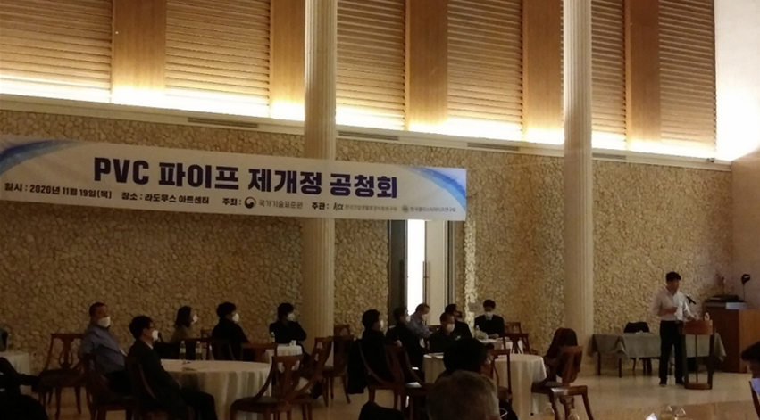

본문
기준치에 미달된 제품이 유통되고 있다.
폴리염화비닐관(PVC) 시장 현황과 문제점
폴리염화비닐관 제조업체 협의회는 자체적인 시장정화 및
안전기준(폴리염화비닐관) 개정을 위한 활동을 시작하였다.
- 2021년 7월 7일 폴리염화비닐관 관련 표준이 개정되면서 비압력용(VN)과 압력용(VP)로 바뀌고, 압력용은 공칭 압력과 비압력용은 표준 치수비와 함께 호칭하도록 변경됨
- 불법·불량제품을 유통하는 기업들이 늘어났으며, 이에 따라 「전기용품 및 생 활용품 안전관리법」의 안전기준 개정 및 안전성 조사가 필요한 상황
- 한국제품안전협회 폴리염화비닐관 제조업체 협의회는 국가기술표준원에 건의 등 다양한 노력을 취하고 있음
플라스틱 파이프 분야 일반 현황1)
플라스틱 파이프는 플라스틱으로 만들어진 관(실린더) 형태로 사용되는 제품이다. 일반적으로 액체, 가스 등의 유체나 작은 고형물 등의 흐를 수 있는 물질을 전달하는데 사용되고 있으며, 구조물의 구조재로 사용되기도 한다. 플라스틱 파이프는 내화학성과 부식저항성 등이 기존 금속이나 콘크리트 재질보다 우수하여 전세계적으로 널리 사용되고 있으며, 또한 플라스틱의 재료도 PVC, PE, PP, PB 등으로 다양하며 각 특성과 적용환경에 적합한 관을 생산할 수 있으며, 기존 강관, 주철관 및 콘크리트보다 무게가 가벼우 며, 취급이 용이하여 다양한 분야에 적용하기에 용이한 재료적 특성을 가지 고 있다.
또한, 상수도, 하수도1), 가스관 등의 관로는 국가 SOC에 해당하는 건축토목 자재이며, 아파트 등의 가정에까지 널리 보급되어 있어 국민의 생활에 직접적인 물/가스 보급 등의 매우 중요한 역할을 담당하고 있는 토건 자재로 할 수 있다. 특히, 관의 문제는 사람의 생활에 직접적인 영향을 끼치며, 그에 대한 고충이 즉각적으로 나타나므로 플라스틱 파이프의 중요성은 매우 높 다. 플라스틱 파이프 시장에서 PVC 파이프와 PE 파이프 두 개의 major 제품 이 각각 점유율이 57%, 34% 정도로 조사되고 있다. PVC 파이프는 수도/하수/산업용/빌딩내 용도 등의 측면에서 기존의 토기나 주철관 대체에 있어 우수한 가성비를 보여 널리 사용되는 파이프이며 사용량이 가장 많다.
플라스틱 파이프 시장의 국제 흐름
플라스틱 파이프 시스템에 대한 시장의 평가는 설치된 시스템의 신뢰성과 적용 용도에 대한 가격 대비 성능이다. 플라스틱 파이프 시스템의 성능에 영향을 미치는 세 가지 요소는 ①사용 재료의 물성, 사례 및 디자인과 생산 기술의 완성도에 따른 파이프 시스템의 성능 ②연결기술 및 부속의 다양성 ③시공기술 및 시공사례이다.
파이프 시스템의 성능과 실증을 보장하기 위해서는 신뢰성 시스템에 대한 일반적인 요구사항의 확립 여부, 시스템의 평가에 대한 표준화 여부, 시험 방법의 결정 등이 필요하고 국제표준을 제정하는 ISO/TC138은 이 분야에 많은 공헌을 하고 있다.
플라스틱 파이프의 발전과 더불어 압력관으로의 사용이 빈번해지고 있으며 이에 근거하여 압력에 따른 장기 물성 보증이 필요하여 ISO에서는 10여년 전부터 최소요구강도(MRS)를 모든 플라스틱관에 적용하도록 권고하여 표준 을 개정하였으나 우리나라는 업체 현실 및 기술 수준이 최근에 국제적 수준 에 부합되어 MRS를 PE에서 시작하여 PVC 등으로 단계적인 개정 절차를 밟고 있다.
글로벌 안전기준의 플라스틱 가소제는 7종을 관리하고 있으나, 현재 국내 PVC 파이프 및 호스의 안전기준은 3종(DEHP, DPB, BBP)만을 적용하고 있 는 상황이다. 어린이제품에 대한 프탈레이트계 가소제 규정은 DEHP, DBP, BBP, DINP, DIDP, DnOP에 2022년 신규물질로 DIBP가 추가되어 총 7종으 로 강화되고 있는 상황에 폴리염화비닐관 파이프 및 호스의 내구신뢰성 향 상과 인체유해물질 제한에 대한 검증을 통해 제품의 품질 향상과 안전성을 확보해야하는 시점이다.
폴리염화비닐관 관련 표준 제·개정 경과
폴리염화비닐(PVC) 재질의 플라스틱관은 1960년대 초반 국내에 도입되어
가장 오랜 시간 사용된 관이다. 수도용 경질 폴리염화비닐관(KS M 3401)은
1968년 제정되었으며, 일반용 경질 폴리염화비닐관(KS M 3404)은 1970년
제정되고, 비압력용 경질 폴리염화 비닐 이음관(KS M 3410)은 1976년 제정
되어 현재까지 운영 중이다. 인증 기업의 수는 현재 3401은 17개, 3404는
24개, 3410은 9개 업체가 인증을 취득하였다.
2008년 일반용 경질 폴리염화비닐관의 시판품조사 후, 2009년 폴리염화비
닐관의 품질과 위생기준이 강화된 표준개정이 추진되었다. 납(Pb)계 안정제
와 가소제 사용이 금지되고, 위생성과 장기내구성 품질을 강화하여, 전통적
으로 회색의 폴리염화비닐관 색상을 흰색으로 변경하고, 재활용 PVC 원료
의 사용을 금지하였다. 2015년에는 수도용 경질 폴리염화비닐관의 표준에
장기내구성을 더욱 강화하기 위하여 ISO 국제표준의 일부를 참고하여, 원료
의 최소요구강도(MRS)를 도입하였으나, 지속적으로 제기되는 폴리염화비닐
관의 품질문제로 인하여 대폭적인 KS 표준의 개정을 추진하게 되었다. 이를
위해 2020년 11월까지 개정(안)을 준비하고, 학계·수요처·생산자·시험기관
등이 참여한 설명회 및 공청회를 개최하였다.
<PVC 파이프 재개정 공청회>
2021년 7월7일 KS M 3401, 3402, 3404, 3410(VG1, VG2, VP) 표준 개정 및 9월 1일 인증심사기준 개정이 되었으며, 12월 1일부터 개정된 표준이시행이 되어 각 제조사에서는 인증심사 기준에 따른 표시 제품을 생산하여야 한다. 개정된 내용은 명칭이 일반 배수용(VG1, VG2)과 수도용(VP,HI-VP)으로 PVC 파이프를 호칭하던 것이 비압력용(VN)과 압력용(VP)로 바뀌면서 압력용은 공칭 압력과 함께, 비압력용은 표준 치수비와 함께 같이호칭한다는 내용으로 개정되었다.
<폴리염화비닐관 개정사항>
| 호칭 지름 (dn) |
바깥 지름 | 최소두께 | ||||||||
| 기본 치수 | 평균 바깥 지름 허용차 |
SDR 33 | SDR 17 | SDR 13.6 | SDR 9 | |||||
| 두께 | 허용차 | 두께 | 허용차 | 두께 | 허용차 | 두께 | 허용차 | |||
| 16 | 22 | ± 0.2 | - | - | - | - | - | - | 2.4 | + 0.5 |
| 20 | 26 | ± 0.2 | - | - | - | - | - | - | 2.9 | + 0.5 |
| 25 | 32 | ± 0.2 | - | - | - | - | 2.4 | + 0.5 | - | - |
| 30 | 38 | ± 0.2 | - | - | - | - | 2.8 | + 0.5 | - | - |
| 35 | 42 | ± 0.2 | 1.6 | + 0.4 | - | - | 3.1 | + 0.6 | - | - |
| 40 | 48 | ± 0.2 | 1.6 | + 0.4 | - | - | 3.5 | + 0.6 | - | - |
| 50 | 60 | ± 0.2 | 1.8 | + 0.4 | - | - | 4.4 | + 0.7 | - | - |
| 75 | 89 | ± 0.3 | 2.7 | + 0.5 | 5.2 | + 0.8 | - | - | - | - |
| 100 | 114 | ± 0.4 | 3.5 | + 0.6 | 5.2 | + 0.8 | - | - | - | - |
| 125 | 140 | ± 0.5 | 4.2 | 0.7 | 8.2 | + 1.1 | - | - | - | - |
| 150 | 165 | ± 0.5 | 5.0 | + 0.8 | 9.7 | + 1.2 | - | - | - | - |
| 200 | 216 | ± 0.7 | 6.5 | + 0.9 | 12.7 | + 1.5 | - | - | - | - |
| 250 | 267 | ± 0.9 | 8.1 | + 1.1 | 15.7 | + 1.8 | - | - | - | - |
| 300 | 318 | ± 1.0 | 9.6 | + 1.2 | 18.7 | + 2.1 | - | - | - | - |
| 350 | 355 | ± 1.1 | 10.7 | + 1.3 | - | - | - | - | - | - |
| 400 | 400 | ± 1.2 | 12.1 | + 1.5 | - | - | - | - | - | - |
개정 후 VG1, VG2라는 구분 용어는 없어지고, VN이라는 하나의 규격이 되며, 이전 규격과 대비하여 SDR33이 구 VG2의 제품을 대체하며, 그 외 파이프 사이즈에 따라 구 VG1을 대체한다. 16~20은 SDR9 / 25~50은 SDR13.6 / 65~300은 SDR17로 파이프의 외경은 변함이 없이 두께(내경)이 일부 변동이 있다.
불량 폴리염화비닐관 파이프 근절 위해 화학 및 파이프 업계 앞장
2013년도 국내 화학 및 파이프 업계가 불량 폴리염화비닐관 생산 및 유통근절에 적극 나선 일이 있었으며, 용도를 표기하지 않는 관은 하·배수관으로분류할 수 없으므로 애초부터 단속할 수 없게 돼 대부분의 시장이 법의 사각지대로 남게 된다는 사유였다.
이에 대응하기 위하여 한국제품안전협회는 2014년 3월 폴리염화비닐관의불법·불량제품 근절을 위한 사후관리 방안 등을 논의하고자 간담회를 개최했다. 이어 4월에는 업계의 신속을 대응을 지원하기 위한 제조업체 대상 제품안전 교육을 실시하였으며, 5월 PVC 제조업체 협의회를 발족하여 불법·불량제품을 추방하고 적정한 상거래 질서 확립을 위한 활동을 시작하였다.
안전기준 개정 추진과 안전성 조사 필요성
2015년 6월 국가기술표준원에서는 폴리염화비닐관 시장의 안전성 조사를
실시했다. 이 결과 13개 제품에 대하여 두께나 인장항복강도가 안전기준에
미달되어 토압을 견딜 수 없는 등 하수도용으로 적합하지 않았고, 일부 제
품은 납 함량이 기준치를 초과하여 환경오염의 문제가 있어 리콜 조치를 취
하게 되었다.
2015년 이후 안전성조사 이후 리콜은 단 6건으로 타 품목 대비 상대적으
로 관심도가 저조하며, 2018년 6월 29일 안전기준이 마지막으로 개정된 이
후 추가 개정이 이루어지지 않음에 따라 기존 KS 개정된 기준에 따르지 못
하는 부적합한 제품이 시중에 유통되고 있어 시장의 혼란을 가중시키고 있
는 상황이다.
2022년 1월에는 조달청 품명이 KS에 맞춰 변경이 되었음에도 불구하고 안
전기준은 여전히 2016년도에 머무르고 있다.
<조달청 품명 개정>
| 변경 전 | 변경 후 | 비고 | ||
| 품명 (물품분류번호) |
세부품명 (세부품명번호) |
품명 (물품분류번호) |
세부품명 (세부품명번호) |
|
| 경질폴리염화비닐관 (40142185) |
일반용경질폴리염화비닐관 (4014218501) |
"변경 없음" | 비압력용경질폴리염화비닐관 ("변경 없음") |
세부 품명 및 품명·세부품명 해설 변경 |
| 수도용경질폴리염화비닐관 (4014218502) |
압력용경질폴리염화비닐관 ("변경 없음") |
|||
| 경질폴리염화이음관 (40142396) |
일반용경질폴리염화이음관 (4014239601) |
"변경 없음" | 비압력용경질폴리염화이음관 ("변경 없음") |
세부 품명 및 품명·세부품명 해설 변경 |
| 수도용경질폴리염화이음관 (4014239602) |
압력용경질폴리염화이음관 ("변경 없음") |
|||
KS 기준 개정에 따라 KS 기준을 준수하는 업체는 피해를 보고 있는 상황이다. 두께의 차이로 인하여 정품 KS와 가격의 차이가 발생하며, 구 KS 기준으로 생산하면서 기준 미달 불량 제품2)도 여전히 유통되고 있다. KS 표준 개정·시행된 지(2021년 12월 1일) 1년 6개월이 넘은 현 시점 개정 표준을 이행해야 한다는 인식은 점차 확산되고 있지만, 여전히 VG2로인쇄하는 일부 업체를 제외하고는 대부분 VN SDR로 표시하여 판매하고있으며, 그마저도 두께는 VN 기준인 3.5mm 이하로 생산하고 있다. 인장강도 미달, 판매 가격은 VG2 중량 가격으로 시판하고 있는 상황이다.
「전기용품 및 생활용품 안전관리법」 공급자적합성확인기준 부속서8 제2부폴리염화비닐관 2항 인용표준에는 ‘다음에 나타내는 표준은 이 기준에 인용됨으로써 이 기준의 규정 일부를 구성한다. 이러한 관련 표준은 그 최신판을 적용한다.’고 규정되어있지만 현실은 구 안전기준3)에 따라 제조하고 있는 상황이다.
이러한 상황에 발맞추어 폴리염화비닐관 제조업체 협의회에서는 자발적으로 불법·불량 제품의 유통을 근절하기 위하여 시장 현황을 공유하고 있으며,안전기준 개정 및 안전성조사를 실시하여 시장 상황 개선되게끔 국가기술표준원에 건의하고 있다. <한국제품안전협회 신동인 부장>
<폴리염화비닐관 제조업체 협의회>
- 1) 한국건설생활환경시험연구원, TC동향보고서(TC138)(2021)
- 2) 두께 3.1mm 미달, 인장강도 KS 표준이 45MPa 이상임에도 40MPa 이하 제품 유통
- 3) 국가기술표준원 고시 2018-0194호(2018.6.29.) 이후 개정이 없음